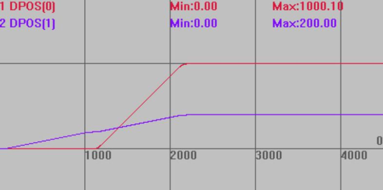

|
类型 |
同步运动指令 |
|
描述 |
将当前轴的目标位置与driving_axis轴的测量位置通过电子齿轮连接。 连接的是脉冲个数，要考虑不同轴UNITS的比例。取消连接时用CANCEL。 假设连接轴0的UNIST为10，被连接轴1的UNITS为100。 使用CONNECT连接，比例ratio为1，当轴0运动s1=100时，轴1运动=s1*UNITS(0)*ratio/UNITS(1)，此时运动10。 比率可以通过重复调用指令动态变化。 常用于手轮使用。 |
|
语法 |
CONNECT（ratio，driving_axis）AXIS（连接轴轴号） ratio：比率，可正可负，注意是脉冲个数的比例 driving_axis：被连接轴的轴号，手轮时为编码器轴 |
|
适用控制器 |
通用 |
|
例子 |
RAPIDSTOP(2) WAIT IDLE(0) WAIT IDLE(1) BASE(0,1) ATYPE=1,1 UNITS=10,100 DPOS=0,0 SPEED=100,100 ACCEL=1000,1000 DECEL=1000,1000 TRIGGER '自动触发示波器 MOVE(100) AXIS(1) '轴1运动100，此时轴0不动 WAIT IDLE(1) CONNECT(1,1) AXIS(0) '轴0连接到轴1，比例为1 MOVE(100) AXIS(1) '轴1运动100，轴0运动1000
运动轨迹 DPOS(0)垂直刻度1000 DPOS(1)垂直刻度500  |
|
相关指令 |